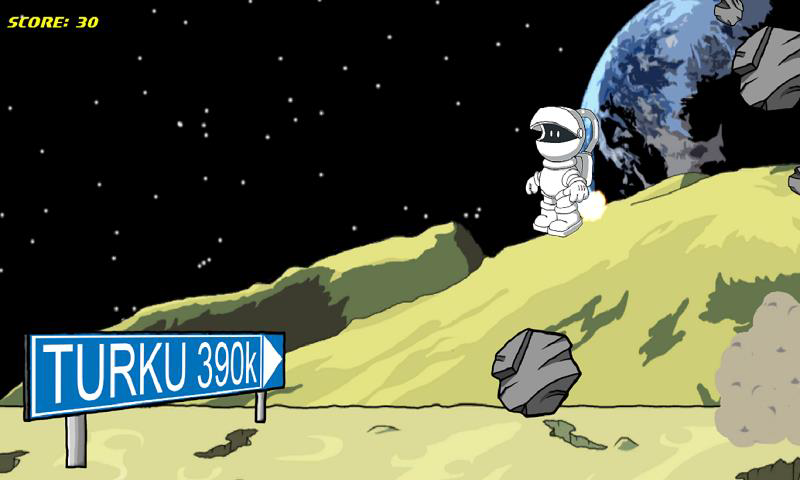

My name is
Aaro Salonen
I'm an enthusiastic project worker, game developer and content creator.
(page under progress)
I'm an enthusiastic project worker, game developer and content creator.
(page under progress)
A windows 8 game app made at a global Microsoft hackathon. Me and my friend got the idea for the game and started creating the game while being trainees at Turku Game Lab. The game was an endless runner from right to left, where you avoided moon rovers, road signs, and meteors by jumping and collecting jet packs, allowing you to jump higher. We won prices in both in the Finnish region as well as in the global region tiers, yielding us a tablet and mobile phone. Later on, at another hackathon, we developed our idea further and won Xbox 1 + Kinect package by adding a motion-based controls to make the character jump as the actual player jumped, registering the motion. The game was downloadable from the Microsoft store.
Game Over screen.
Screen capture of the level, randomly spawning objects, and the player using the jetpack to boost over them.
This was a Capstone project showcased in the ICT-Showroom event, where I was placed into a team to create a game for Turku-based gaming company, NordicEdu. We created a slide-puzzle game where the player combined matching quilt pieces by moving them around on the board. I was a project manager as well as concept and art designer. After the concept was ready, I designed the story and the character, Jack Hugeman, whose guilty pleasure was the unmanly hobby of sowing quilts.
I joined a team in Turku Boost Start Up Journey in 2015 to create a restaurant management game. The game project was later funded with AVEK and joint partnership with Hybrid Games Oy to develop further. I was initially part of core game concept and design group, and one of the three graphics designers. At first, I did the UI graphics, but later on, one of the graphics designers left, claiming all of his assets, resulting in me redoing his game object assets for the game.
UI and menu icons by me.
Cooking minigame icons by me.
DevShark Superheroes hackathon, we made a whack-a-mole –game with dolphins and sharks. In the common hackathon practice, nothing was published. In the game, you try to quickly tap the sea creatures, as the waves interleaved to left and right.
I’ve had two internships at Turku Game Lab. In the latter, I was tasked with familiarizing myself with Unreal Engine 4 and then creating the ICT-building – which is our school building. I began by getting accustomed with the tools as much as I could and made a small game where you need to shoot a ball through holes in the walls. A fun third-person shooter game that was easy to make because the engine had plenty of free content, such as materials and player prefabs.
The four images above are from the TUAS ICT-building. I was not able to apply materials or lighting the project because my work placement ended, but it gave me enough confidence and skill to continue more with the engine on my free time, and take my thesis in the same direction.